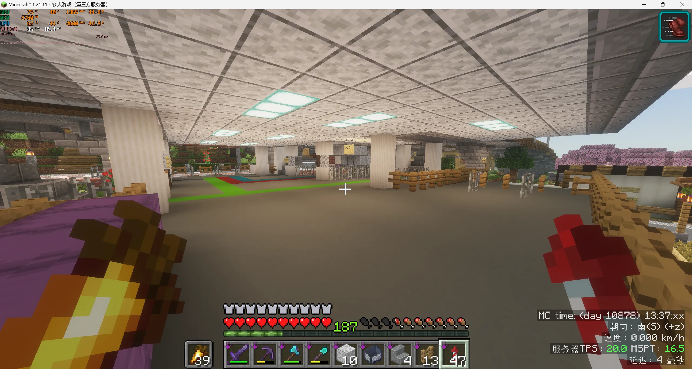
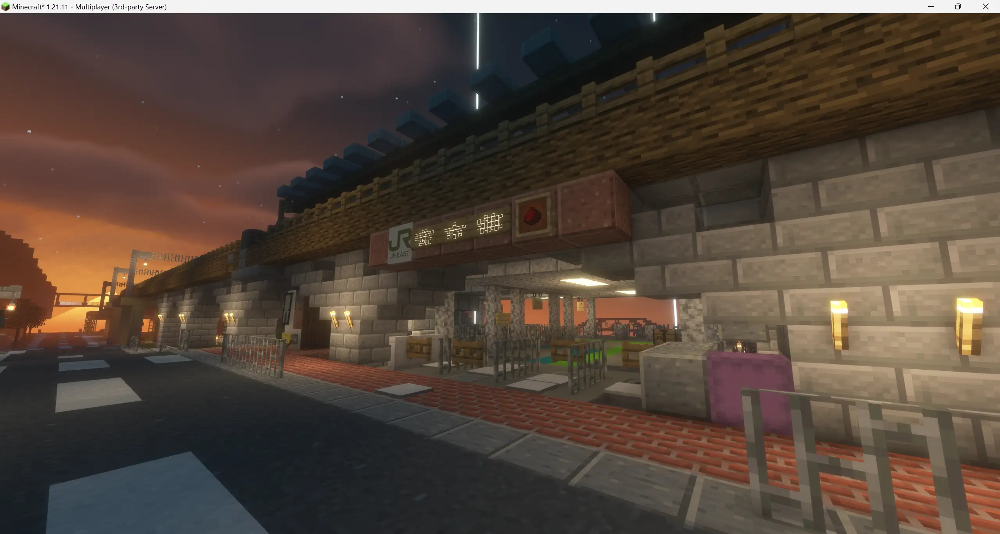
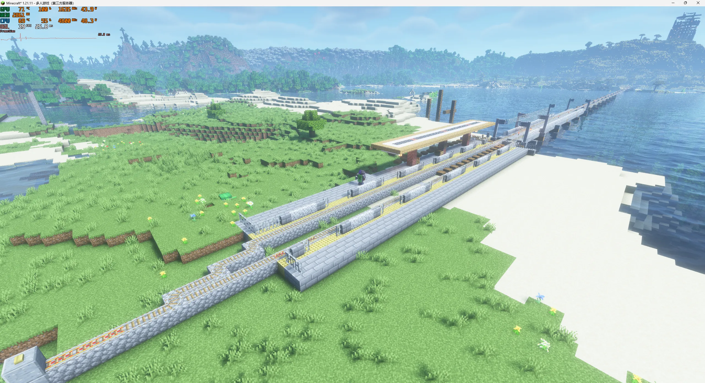
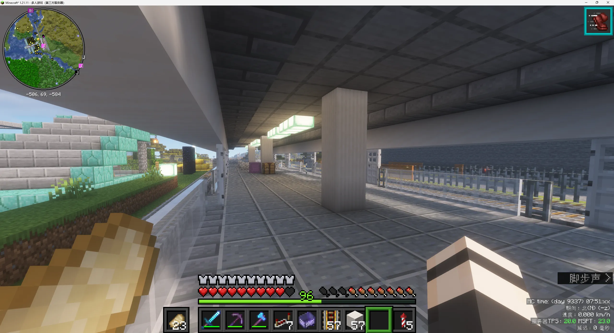
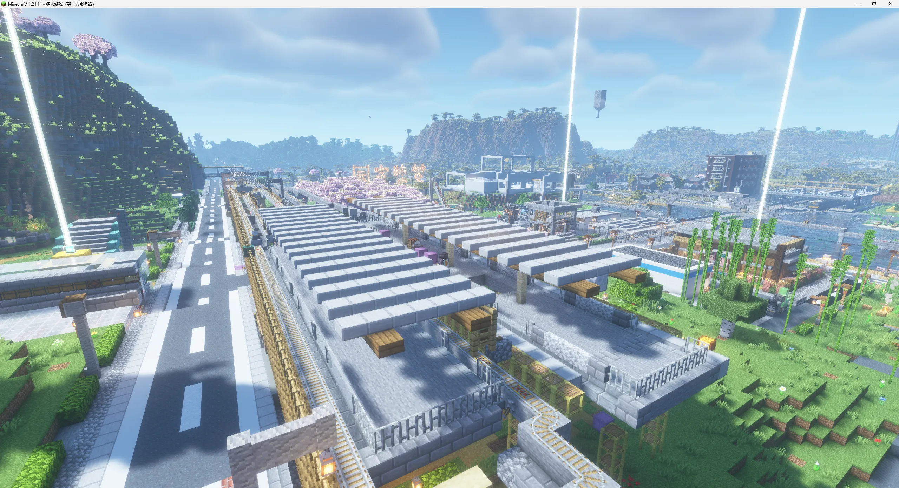
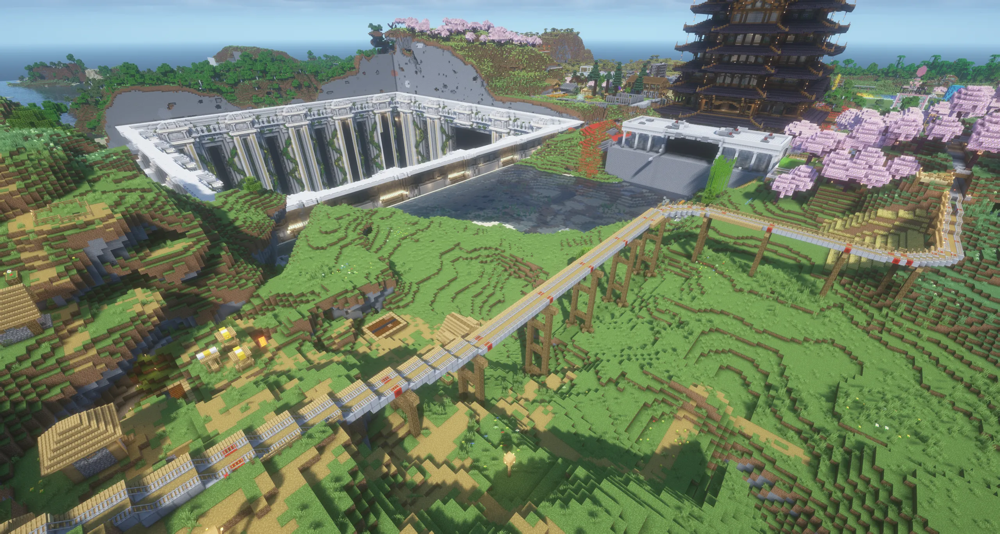
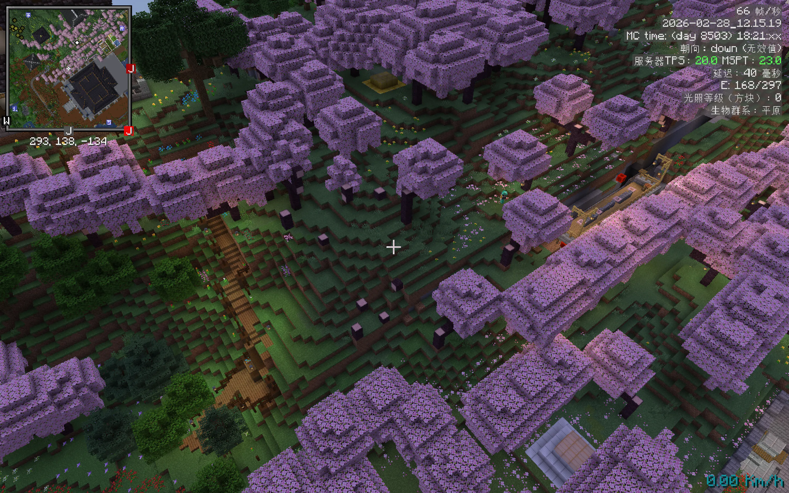
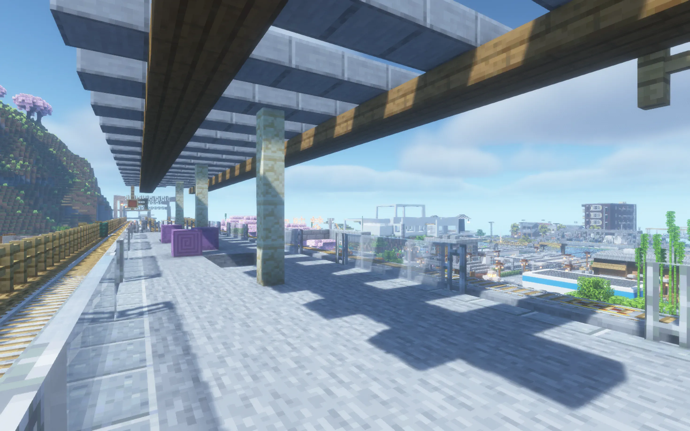
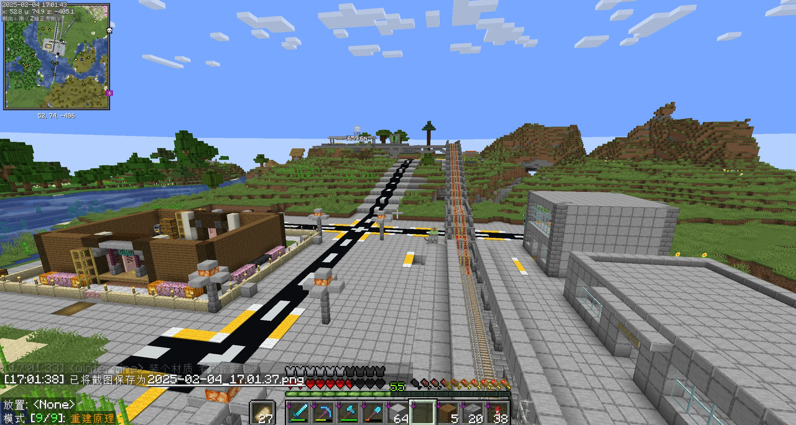
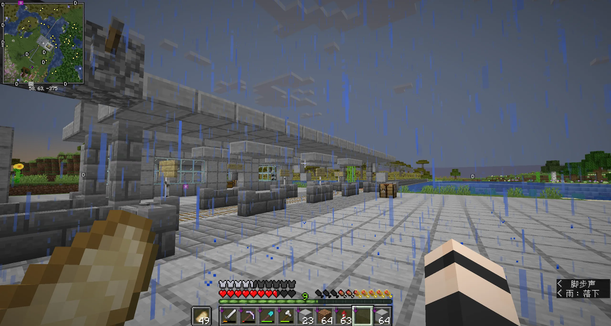

车站重新装修

[ 芳木镇 站 ]
- 重新装修，扩大并启用东北出入口
设备升级

[ 芳木镇 站 ]
- 电动检票机启用
车站开通
[ 环线 ]
- 临港 站 临时站前折返 改为非折返进站
- 临港 站 正式常态化开通
- 环线 新临港 站 区间复线化完工
站台重修

[ 热海线 ]
- 热海线 热海新城站 站台翻新+扩编5节长度
- 因进站速度需求提升，由岛式站台改为双岛式站台
设备更新

[ 热海线 ]
- 热海线 猫交易所站 电动屏蔽门安装调试完成
施工进度

[ 热海线三期延伸 ]
- 热海线 芳木镇站 站台基础施工完成
- 热海线 芳木镇站 上行线土建完工
车站开通
[ 轨道拓宽 ]
- 环线 后山 至 老交易所 区间盾构完工（感谢@mrcageman366盾构）
- 后山站开通
- 后山站 站后折返线拆除
施工改造

[ 轨道拓宽 ]
- 环线 金台夕照站 至 老交易所站 区间 轨道拓宽工程完工
- 部分弯道额外加宽，并加装护栏
施工改造

[ 施工改造 ]
- 环线 金台夕照站 至 花海站 区间 线路入地工程完工（总耗时半年）
- 地表土层还原填埋工程完工
站台翻新

[ 设施维护 ]
- 芳木镇站 站台重建完成
- 热海线 雷伽屯 站 暂停运营，拆除工程完工
[ 技术改造 ]
- 环线 信号控制系统由GOA 1.0至1.1版本的热升级，并启动空载试运营。
规划图公开

[ 2025Q1规划 ]
- 规划不代表实际建设
复线化！

[ 技术改造 ]
- 中央线复线化完工
- 货运列车为主，客运交替运行
- 图中的多条轨道为：不同线路的远期预留
单线开通
[ 车站开通 ]
- 中央线 中央站与新宿站投入单线运营
车站开通

[ 车站开通 ]
- 中央线 新宿站主体部分完工
- 一切的起点。